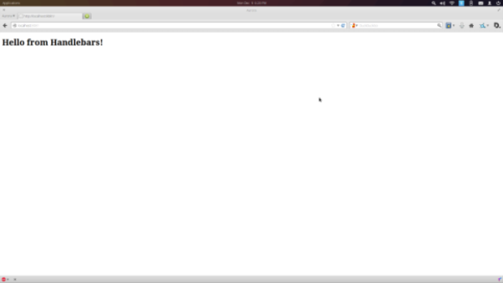

This is the first post in a series about building a browser application using node, npm and browserify…and that’s it. The current version of the code can be found on GitHub
To Framework or Not To Framework
The internetz are always full with posts and conversations about the latest and greatest frameworks. Everywhere I turn there is another “Why Framework X is better than Framework Y” thread. Recently, however, the idea of building things without frameworks has been coming up. And the idea is pretty prevelant in the node community.I don’t want to spend too much time on rehashing this, but I’ll touch on it briefly.
Frameworks are cool, I guess. I see their utility and I know plenty of people are building cool things with them. For me, the tradeoffs involved aren’t always worth it. Choosing a framework can be freeing in some aspects, but limiting in others. You’re forced into doing things the way the creators envisioned, but I guess if you share that vision, then you’ve made the right choice. Personally, I’m not to keen on being forced to write my code in a certain way because the framework says so. Consider, also, that a framework is designed to be all things to all people. Ultimate resuse. Ultimate generality. This makes them huge, non-modular pieces of code. Again, my preference (these days) is to use smaller, specialized modules and compose my application from there.
My ideas on how to build things aren’t new. They are, however, new to me. I’ve only recently started diving into node, and I’ve become a big fan of the small modules approach; the Unix Philosophy. That way of building things is completely new to me, so I took up this project as a way to step up my game. As I wrote the app, I really liked the way things shaped up, so I thought I would share my approach.
Goals
My main goal was to use node and npm only. I wanted to use the node module pattern, and the vast library of modules in npm to build an application for the browser. What I didn’t want to do was build a back-end. This is merely a browser exercise. These are the constraints I set up for myself:
- Write all code in node
- ZERO FRAMEWORKS
- Use npm for all things
Enough of that. Let’s dive in.
Setting Up
I’m going to assume you have node and npm installed, so the first thing you want to do is set up a directory, and a repo. ~ bash mkdir flickr-viewer && cd flickr-viewer/ && git init ~
Simple enough. Now we need a .gitignore. I keep mine simple. ~ bash echo node_modules > .gitignore ~
The last thing we need to get things started is package.json. You might have your own, I was still new to all of this so I went with: ~ bash npm init ~ Then I just answered all of the prompts and moved on.
Builds
My third goal was to use npm for everything, so it works out nicely that there is npm run. We can create commands in our package.json and run them with npm. No Make, Jake, Grunt or anything else. I don’t have any preference, yet, but I wanted to keep things simple, and npm had what I needed built in.
Before we can set up the build scripts, we’ll need to pull in a couple of modules. I’ll explain each in a moment.
npm install browserify --save-dev
npm install watchify --save-dev
npm install catw --save-dev
npm install uglify-js --save-dev
npm install http-server --save-dev
npm install hbsfy --save-devNow, each of those is going to install into your local node_modules, but you could just as easily choose to install them globally. I like this approach because anybody that wants to pull down your project just needs to run npm install and everything is ready for them.
First up is browserify. Browserify is what lets us write node modules for the browser. It goes through your require calls and bundles up all the dependecies.
Next is watchify. The README for this package says it all. It watches for changes in your source files, and re-bundles them with browserify.
The next one is a little strange, but it’ll make sense in a second. catw concatenates files while watching for changes.
Next, we’ve got uglify-js, which is JS parser, minifier, compressor, etc. Basically, making your JS read for production.
http-sever is a simple http server, and is honestly totally optional. If you prefer something else, then go for it.
Lastly, we’ve got hbsfy. I chose to use handlebars for templating and hbsfy will work with browserify to allow me to require my .hbs files like any other module.
Now for the good stuff, the builds. Now, I can’t take credit for this, they’re taken directly from an article by substack. Here is the scripts section of package.json.
"scripts": {
"build-js": "browserify -t hbsfy app.js | uglifyjs -mc > public/app.js",
"build-css": "cat css/*.css > public/css/site.css",
"build": "npm run build-js && npm run build-css",
"watch-js": "watchify -t hbsfy app.js -o public/app.js",
"watch-css": "catw css/*.css -o public/css/site.css",
"watch": "npm run watch-js && npm run watch-css",
"start": "http-server"
}I won’t go into the nitty-gritty of each, but essentially you’ve got two sets of commands.
First you’ve got your ‘watch’ commands: ‘watch-js’ and ‘watch-css’. ‘watch-js’ uses watchify to take everything in app.js, bundle it up, and watch it. Similarly, ‘watch-css’ will use catw to concatenate my CSS files and watch them. I’m not doing anything fancy with the CSS, so a simple concatenation works just fine. ‘watch’ is just a handy hand shortcut to run both.
Next you’ve got your ‘build’ commands: ‘build-js’ and ‘build-css’. They basically do the exact same thing as the ‘watch’ commands except they don’t watch, plus the bundled JS gets run through uglifyjs. Again, we’ve got a shortcut to both with ‘build’.
Lastly, you’ve got ‘start’. This just spins up http-server.
Finishing Up
OK. We’re all setup, so let’s make sure everything works. First we need our public directory.
mkdir publicTo make sure all of the pieces are playing nicely, we’ll add a simple app.js and index.hbs file.
//app.js
var template = require('./index.hbs'),
container = document.getElementById('container');
container.innerHTML = template();<!-- index.hbs -->
<h1>Hello from Handlebars!</h1><body>
<div id="container"></div>
</body>
<script src="app.js"></script>~
Next:
npm run watchIf we did everything right, we should get something like this:
> flickr-viewer@0.0.0 watch /home/wilhelmson/Projects/myApp
> npm run watch-js && npm run watch-css
> flickr-viewer@0.0.0 watch-js /home/wilhelmson/Projects/myApp
> watchify -t hbsfy app.js -o public/app.jsAssuming everything worked, all that is left to do is: ~ bash npm run start ~
The http-server module will print the port number it is running on in the console, probably 8000, so just hit that and you should see: 
Wrap-Up
OK, so that might not seem to impressive, but set up rarely is. However, we’ve now got a nice platform to build our application from. We’ve got the main pieces in play to write, build an run our app, and it’s all built using only what node and npm have to offer.
In the next few posts I want to cover building each of the different pieces of the application. My focus on building this app was to keep things small and single-minded. As things progress, I touch on how I chose to do that.